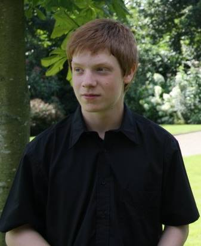

Here you'll find some basic information about the chef who not only makes the greatest lasgne, but also the greatest websites!

I'm chef Kevin Dossche. I was born in Aalst in 1996 and I'm currently living in Moorsel.I have always been a great fan of lasagne and so I decided to make a tribute page dedicated entirely to this tasty dish. To show my appreciation, I studied the origin of lasagne. And to please all of you, I inserted my own special secret in this website. But to those of you that don't like cooking or don't have all the ingredients necessary to make this delicious recipe, I also made sure you can order prepared lasagne or buy the ingredients seperately.